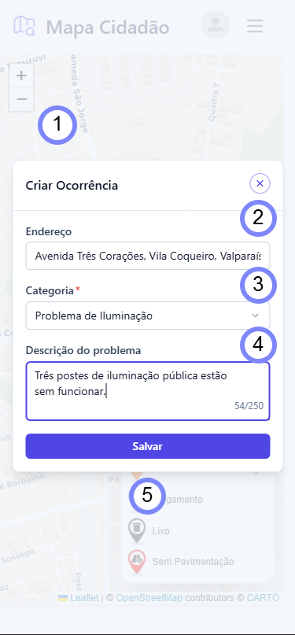

1
Modal de registro: Formulário sobreposto ao mapa para criação de novas ocorrências.
2
Endereço: Preenchido automaticamente com base no ponto selecionado no mapa.
3
Categoria: Campo obrigatório com seleção do tipo de problema (iluminação, lixo, alagamento, etc.).
4
Descrição: Texto livre para detalhar o problema, com limite de 250 caracteres.
5
Salvar: Envio da ocorrência para persistência no servidor e exibição no mapa.